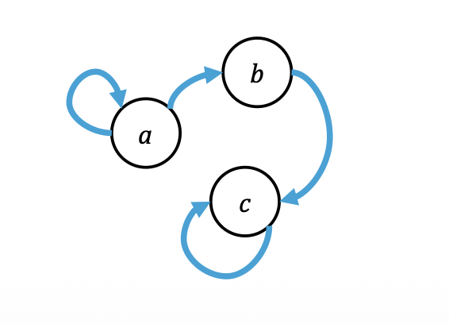
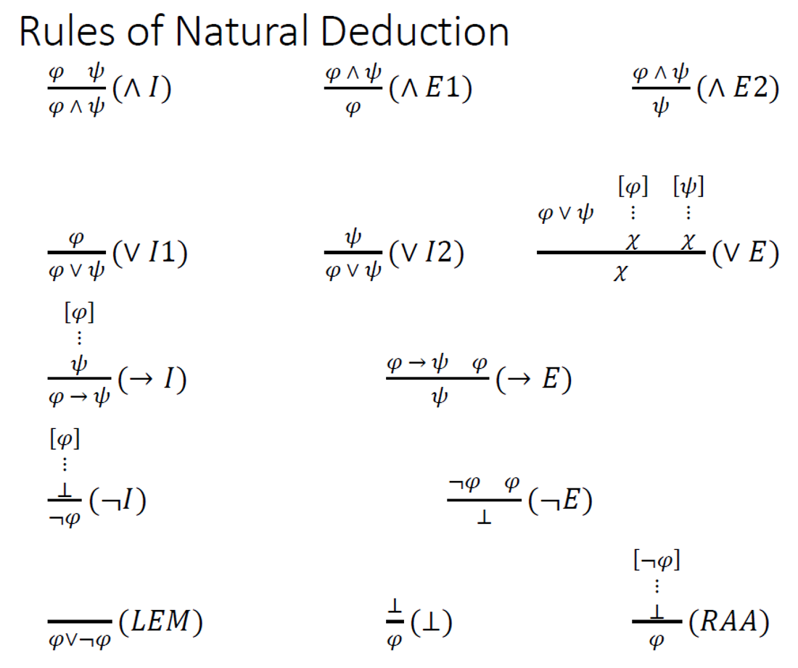

Computer Science Notes
COMP1311 Mathematics
Hongyi Li
Contents
Proposition and Predicate 命题与谓词
proposition 命题
- 定义:Declarative statements with a definite truth value (true or false), rather than subjective opinions. 有确定真值(T or F)的陈述句，非主观意见
- Example：Johor is in Malaysia.
Predicate 谓词
- 定义:Contains variables; the truth value depends on the values assigned to the variables. 含变量，真值取决于变量取值
- Example: P(x): x>8 if P=9,T
Neither 两者皆非
- Example: 疑问句、命令、主观、悖论; What’s you name?, This statement is false.
- Components 组成
- Premises 前提：假设为真的陈述，证明起点。
- Conclusion 结论：需建立的陈述。
- Arguments 论证：从前提推导结论的逻辑步骤。
- 可借助Axioms公理和已证结果（定理和引理）
- 可写为P→Q 形式
- Axioms 公理: 无需证明即接受为真
- Theorem 定理：已证明的命题
- Lemma 引理：辅助证明其他结果的已证命题
Proof method 证明方法
- Direct proof 直接证明: 从前提直接推导结论
- Proof by cases 分情况证明: 划分所有可能情况逐一证明
- Proof by contrapositive逆否证明: 证明非Q→非P代替P→Q
- Proof by contradiction反证法：假设命题为假，推出矛盾
- Mathematical induction数学归纳法：证基础情况，再证每步递推
Example
Proposition 命题:
- The 1st of October is a Wednesday, so the 13th of October is a Monday
Premises 前提:
- October is a Wednesday.
- The days of the week repeat every seven days in their usual order.
- 13 October is 12 days after 1 October.
Argument 论证:
- Since 12 = 7 + 5, moving forward 7 days from Wednesday returns to Wednesday.
- Moving forward another 5 days gives Monday.
- Therefore, 13 October is a Monday.
Conclusion 结论:
13 October is a Monday.
证明 = 前提 + 论证 + 结论。
证明方法
Direct proof 直接证明
- 证 P→Q: 假设 P,用定义一步步推到 Q
- 模版：假设P → 用定义展开 → 凑出Q的定义形式
- 例: 若 18|n,则 6|n n可以被18整除，则n可以被6整除
- 假设n = 18k，k∈ℤ
- 18=6×3,所以 n=6(3k)
- 3k 是整数
- 所以 n=6m, m=3k∈ℤ, 即 6|n
- 例：两个奇数之积是奇数
- 设 a=2k+1, b=2m+1
- ab=4km+2k+2m+1 =2(2km+k+m)+1
- 2km+k+m 是整数,所以 ab 是奇数
Counterexample 反例
- 推翻全称命题:找一个 P 真、Q 假的例子
- 例: a²=b² ⟹ a=b
- 证明是假的,取 a=2,b=−2。应该改成 a=b 或 a=−b,或加条件 a,b≥0
If and only if 当且仅当
- 证 P↔︎Q:两个方向都要证
- 先假设P，推出Q，再重新假设Q，推出P
- 例：x²=x ⟺ x=0 或 x=1
- ⇒x²−x=0,即 x(x−1)=0,所以 x=0 或 x=1
- ⇐:x=0 时 0²=0,x=1 时 1²=1
Contraposition 逆否命题
- P→Q ≡ ¬Q→¬P (逻辑等价)
- 用的时机：证“n² 偶 ⟹ n 偶“时,n²=2k 很难变成 n 的形式。逆否命题“n 奇 ⟹ n² 奇“则很顺:n=2k+1, n²=2(2k²+2k)+1
- 例：x+y≥2 ⟹ x≥1 或 y≥1
- 逆否: x<1 且 y<1 ⟹ x+y<2
- 两个不等式相加:x+y<1+1=2
Case analysis 分情况
- 分的情况加起来必须覆盖所有情况；每个情况都要单独证明
- 例：n²+3n 是偶数
- n=2k: 4k²+6k=2 (2k²+3k)
- n=2k+1:4k²+10k+4 =2 (2k²+5k+2)
- 每个整数非奇即偶,所以情况穷尽
Contradiction 反证法
- 假设结论为假 → 推出矛盾 ⊥ → 原结论成立 不能只写矛盾，要写清楚和什么矛盾
- contraposition逆否命题 和 contradiction反证法的区别：
- contraposition：目标是 P→Q,假设 ¬Q, 必须推出 ¬P,目标明确
- Contradiction：假设整个命题为假, 推出任何矛盾都行
- 例：没有最小正实数
- 假设 x 是最小正实数,取 y=x/2。
- y>0 且 y<x, 与“x 最小“矛盾
Induction 归纳法
- 类似于多米诺骨牌
- Base case：证明 P(1) 成立(推倒第一块)
- Inductive hypothesis：假设某个 k 使 P(k) 成立
- Inductive step：证明 P(k+1)(每块推倒下一块)
- 例：2ⁿ≥n+1
- Base:n=1, 2¹=2≥2
- Step:假设 2ᵏ≥k+1。则 2ᵏ⁺¹=2·2ᵏ ；2·2ᵏ ≥ 2(k+1) ；2(k+1) = 2k+2；2k+2 ≥ k+2
- 2ᵏ⁺¹ = 2·2ᵏ ≥ 2(k+1) = 2k+2 ≥ k+2
- 所以 2ᵏ⁺¹ ≥ k+2,这正是 P(k+1)
- 用到的两个不等式:归纳假设 2ᵏ≥k+1,以及 2k+2≥k+2
Sets, Functions and Relations
Basic of sets 集合基础
- 定义：互不相同，定义明确的对象的集合
- 写法：
- Roster:D={0,1,2,3}
- Set-builder:I = {i∈ℤ : 0≤i<4}, 冒号读作“such that“
- 集合不记顺序和重复，因此 {1,2,3}={3,2,1}={1,1,2,3}
- | A | 的意思是集合中不同元素的个数
- ∅ 和{∅}的不同：∅没有元素，因此｜∅｜ = 0；{∅}里有一个空集元素，因此为1；空集是任何集合的子集
- ⊆ 的意思代表A的每个元素都在B里面；⊊ 代表A是B的子集，但A不等于B
Sets operations 集合运算
相关：COMP1314 关系代数基本运算
| OR |
A∪B |
在 A 或 B(包含两者都在) |
| AND |
A∩B |
在 A 且在 B |
| AND NOT |
A∖B |
在 A 不在 B(顺序有关) |
| NOT |
Aᶜ=U∖A |
不在 A(要先知道全集 U) |
Example：
- U={1..6}, A={1,2,4,6}, B={2,3,4}
- A∪B={1,2,3,4,6}
- A∩B={2,4}
- A∖B={1,6}
- Aᶜ={3,5}
常用定律：
- 恒等: A∪∅=A, A∩U=A
- 幂等: A∪A=A, A∩A=A
- 互补: A∪Aᶜ=U, A∩Aᶜ=∅, (Aᶜ)ᶜ=A
- 交换律与结合律: ∪ 和 ∩ 都满足,但 ∖ 不满足交换律
- 分配律: A∩(B∪C)=(A∩B)∪(A∩C)
- De Morgan: (A∪B)ᶜ=Aᶜ∩Bᶜ, (A∩B)ᶜ=Aᶜ∪Bᶜ 口诀：把 NOT 推进去, OR 和 AND 互换
证明集合等式：
- 取任意 x,用“每步等价“的方式推
- Example:
- x∈(A∪B)ᶜ ⟺ x∉A∪B ⟺ x∉A 且 x∉B ⟺ x∈Aᶜ∩Bᶜ
Ordered Pairs, Cartesian Products, and Power Sets 有序对，乘积与幂集
相关：COMP1314 笛卡尔积 · COMP1314 离散数学基本概念
Ordered pair有序对：(a,b) = (c,d) 当且仅当 a=c 且 b=d，例如 (2,5) ≠ (5,2),但 {2,5} = {5,2}
Tuple 元组：固定位置数的记录，如 (student_id, module, mark)=(31415,”COMP1311“,78)
Cartesian product 笛卡尔积 A×B={(a,b) : a∈A, b∈B}
- A={u₁,u₂}, B={read,write}:A×B 有 4 个对：A × B = {(u₁,read),(u₁,write),(u₂,read),(u₂,write)}
- 独立选择相乘:3 个系统×2 个浏览器×2 种模式=12 个测试用例
- A×∅=∅;只允许部分组合时,得到的是 A×B 的子集
Power set 幂集：𝒫(A) 是 A 的所有子集的集合
- 它的元素是子集,不是 A 的元素
- 𝒫({a,b}) = {∅,{a},{b},{a,b}}
- 每个元素“选或不选“两种,所以 |A|=n 时 |𝒫(A)| = 2ⁿ
- 3个元素即为1+3+3+1 = 8个子集
- Bit string位字符：顺序固定为 (logging, caching, encryption) 时,101 表示 {logging, encryption}
- 𝒫(∅)={∅}, 大小为 2⁰=1, 幂集永远不为空
Relation 关系:R⊆A×B,即“真正成立的那些对“
Function 函数 f:A→B:对每个 a∈A,输出存在且唯一。两个输入可以共用一个输出,但一个输入不能有两个输出
- A={1,2,3}, B={a,b}
- P={(1,a), (2,b),(3,b)}:是函数
- Q={(1,a), (1,b), (2,a), (3,b)}:不是函数, 1有两个输出(唯一性失败)
- T={(1,a), (2,b)}:不是函数, 3没有输出 (存在性失败)
Example：U={u₁,u₂}, R={viewer,admin}, F={cache,logs}
- 用户-角色可能对:2×2 = 4
- 功能配置数:|𝒫(F)| = 2²=4
- 实际允许的用户-角色对:一个 relation (U×R 的子集)
- 每个用户恰有一个默认角色:一个 function U→R
Conclusion：
| Set 集合 |
哪些对象属于？ |
| Tuple 元组 |
每个位置代表什么？ |
| Cartesian product 笛卡尔积 |
哪些有序组合是可能的？ |
| Power set 幂集 |
哪些选法是可能的？ |
| Relation 关系 |
哪些链接实际成立？ |
| Function 函数 |
每个输入是否恰好一个输出？ |
Relation 关系
相关：COMP1314 离散数学基本概念
- 什么是relation
- 关系 R 是笛卡尔积的子集:R ⊆ A × B,即 R = {(a, b) | a ∈ A 且 b ∈ B}
- 通俗理解：Relation就是“把集合里的元素连起来的方式”，R里的每个有序对就是一条连线
- Example：
- A = {1,2,3}, R = {(1,2),(2,3)} → “1 与 2 相关, 2 与 3 相关”
- 颜色与水果:C = {red, orange, yellow}, F = {apple, orange, lemon}
- R = {(apple, red), (orange, orange), (lemon, yellow)}
- F × C 共有 3 × 3 = 9 个有序对, 而 R 只有 3 个 → R 只是 F × C 的一个子集
- Digraph 有向图:用箭头表示关系，每个有序对(a,b)画成一条从a指向b的箭头; (a,a)是自环

- Six Types of Relational Properties 6种关系性质
| Reflexive 自反 |
∀a∈A, (a,a)∈R |
每个元素都和自己相关 |
每个点都有自环 |
| Irreflexive 非自反 |
∀a∈A, (a,a)∉R |
没有元素和自己相关 |
每个都没有任何自环 |
| Symmetric 对称 |
(a,b)∈R ⇒ (b,a)∈R |
有去必有回 |
箭头都是双向的 |
| Asymmetric 非对称 |
(a,b)∈R ⇒ (b,a)∉R |
有去必无回 |
无双向箭头,也无自环 |
| Transitive 传递 |
(a,b)∈R 且 (b,c)∈R ⇒ (a,c)∈R |
能走两步到的,必须能一步直达 |
a→b→c 时必有 a→c |
| Antisymmetric 反对称 |
(a,b)∈R 且 (b,a)∈R ⇒ a=b |
不同元素不能互相指向 |
双向箭头只允许是自环 |
Equivalence Relations and Equivalence Classes 等价关系与等价类
- 给元素分组
- 等价关系：同时满足自反+对称+传递，记作“~”
- 等价关系中将集合元素分类到buckets中，每个buckets被称为等价类
[a] = {x ∈ A : x ~ a}- 重要性质：
- 每个元素恰好属一个类
- 各类互不重叠
- 所有类合起来覆盖整个集合
- Example:
- (首字母相同):A = {apple, ant, ball, bat, cat}
- [apple] = {apple, ant}, [ball] = {ball, bat}, [cat] = {cat}
Partial Order 篇序
- 给元素排高低
- 定义：同时满足Reflexive 自反，Antisymmetric 反对称，Transitive 传递
- 通常写作 a ≼ b 代替 (a,b)∈R。此时 (A, R) 称为poset偏序集
- 类似 ≤, 但不要求所有两个元素都能比较
- 严格篇序：把自反换成非自反,即 非自反 + 反对称 + 传递 (符号< )
Function 函数
- function是一种特殊的relation
- 规则：定义域里的每个元素，都恰好对应培域里的一个元素，不能一对多
- 记作：f: X \to Y，并且 f = \{(x, f(x))\} \subseteq X \times Y
- 术语：
- 定义域：
- Domain，Dom(f) = S，含义：所有输入
- 陪域：
- 值域/像:
- Range / Image，img(f) = \{f(x) \mid x \in S\}, 实际被打中的输出
- Example：
- A = \{a,b,c\}，B = \{1,2,3,4,5\}，f = \{(a,2),(b,1),(c,3)\}
- Domain = \{a,b,c\}
- Codomain = \{1,2,3,4,5\}
- Range = \{1,2,3\}
Injective 单射
- 不同的输入一定得到不同的输出，没有两个箭头指向同一个点
- 陪域里的每一个元素，被至多1个(0或1个)输入指向
- 形式定义: f(x_1) = f(x_2) \implies x_1 = x_2
- 证明:
- 思路：假设 f(a) = f(b)，推出 a = b
- 证明 f(x) = 2x + 1 是单射：2a + 1 = 2b + 1 \Rightarrow 2a = 2b \Rightarrow a = b \quad
- 证明不是单射则找两个不同的输入得到相同的输出
Surjective 满射
- 陪域里每一个元素都至少被一个箭头打中，没有空着的输出
- 陪域里每个元素被至少 1 个输入指向
- 形式定义: \forall b \in B,\ \exists a \in A \text{ such that } f(a) = b
- 证明:
- 思路：任取 y \in T，反解出 x，并检查 x 确实在定义域里
- 证明 f(x) = 2x + 1（\mathbb{R} \to \mathbb{R}）是满射：
- 任取 y \in \mathbb{R}，令 y = 2x + 1
- 解得 x = \dfrac{y - 1}{2}
- 这个 x 仍然是实数 → 满射
- 证明不是满射则找一个陪域里打不中的元素：
- g(x) = x^2：取 y = -1，没有实数 x 满足 x^2 = -1 → 不是满射
Bijective 双射
- 即是单射又是满射
- 两边每个元素都恰好有一个输入指向
Inverse function 反函数
- 定义：f \text{ 是双射} \iff f \text{ 有反函数 } f^{-1}
- cancellation identities 消去恒等式:f(f^{-1}(y)) = y \qquad f^{-1}(f(x)) = x
- 也就是f 和 f^{-1} 复合起来等于什么都没做
- 求反函数的三步:
- 确认 f 是双射
- 交换 x 和 y：y = f(x) 变成 x = f(y)
- 解出 y，得到 y = f^{-1}(x)
- Example:f(x) = 2x + 1
- 确认是双射
- x = 2y + 1
- y = \frac{1}{2}(x - 1)，所以 f^{-1}(x) = \frac{1}{2}(x-1)
- 验算：f(f^{-1}(x)) = 2 \cdot \frac{1}{2}(x-1) + 1 = x
Cardinality 基数
- 基数 = 集合里元素的个数，记作 |A|
- |\{a,b,c\}| = 3
- |\{\{1,2\},\{3\}\}| = 2
- |\{\}| = 0
- 有限集的规则
- 容斥原理 inclusion–exclusion： |A \cup B| = |A| + |B| - |A \cap B|
- 不相交时: |A \cup B| = |A| + |B|
- 幂集： |P(A)| = 2^{|A|}
- Example:
- A = \{1,2,3\}，B = \{3,4\} → |A \cup B| = 3 + 2 - 1 = 4，|P(A)| = 8
Infinite sets 无穷集合
Countably Infinite 可数无穷
- 如果一个集合能和 \mathbb{N} = \{1, 2, 3, \dots\} 建立双射，它就是可数无穷的，基数记作 \aleph_0（读 aleph-null / aleph-zero）
- \aleph_0 是最小的无穷
- Example:
- A = \{1,2,3,\dots\}，B = \{2,4,6,\dots\}，取 f(n) = 2n
- 单射：2n_1 = 2n_2 \Rightarrow n_1 = n_2
- 满射：任意偶数 2k 都有原像 k
- 所以是双射，|A| = |B| = \aleph_0
- 因此偶数和自然数一样多, 基数看的是能不能配对, 不是谁包含谁
无穷集合
- 定义: 集合 A 是无穷的 ⟺ A 能和它自己的某个真子集（proper subset）建立双射
- 打破了“有限集合的真子集一定更小“这条规律
- \mathbb{N} = \{1, 2, 3, 4, \dots\} 和偶数 E = \{2, 4, 6, 8, \dots\}
- E 是 \mathbb{N} 的真子集，因为它把所有奇数都拿掉了
- 但每个自然数都有一个偶数伙伴，每个偶数也都有一个自然数伙伴，谁都不落单
- 因此真子集和原集合一样大
- 这便是无穷集合的定义
Logic
proposition 命题
- 命题是一个陈述句，并且要么真、要么假。不能既真又假，也不能无法判断
Logical Connectives 逻辑连接词
相关：COMP1313 Logic notation
| ¬p |
Negation |
not p |
p 为假时 |
| p ∧ q |
Conjunction |
p and q |
两个都真 |
| p ∨ q |
Disjunction |
p or q |
至少一个真 |
| p ⊕ q |
XOR |
either p or q, not both |
恰好一个真（两者不同） |
| p → q |
Implication |
if p then q |
只有 T→F 时为假，其余都真 |
| p ↔︎ q |
Biconditional |
p iff q |
两者相同（同真或同假） |
| T |
T |
F |
T |
T |
F |
T |
T |
| T |
F |
F |
F |
T |
T |
F |
F |
| F |
T |
T |
F |
T |
T |
T |
F |
| F |
F |
T |
F |
F |
F |
T |
T |
Special Proposition 特殊命题
- Tautology 重言式
- Contradiction 矛盾式
- Contingency 可满足但非永真
Construct a truth table 构造真值表
相关：COMP1313 真值表
- 变量个数 n → 行数 2ⁿ：2 个变量 4 行，3 个变量 8 行
- 从最内层开始，一层一层算中间列，最后算出整个式子
Example 1
- ((p→q) ∧ (q→r)) → (p→r)
- 思路: 要想证明以上式子为Tautology，恒为真；可以证明这个式子为F，若证明不出来，则恒为真
- 步骤:
- 依据真值表，只有在左边为T、右边为F的时候才位F
- 箭头右侧的(p→r)为F，因此p为T, r为F
- 箭头左侧要为T, 因此(p→q)为T, (q→r)为T，因此q = F
- q 不可能既 T 又 F，找不到让它为假的情况，为tautology
Example 2
- p → (q∨r) 和 (p→q) ∨ (p→r) 是否等价
- 逻辑等价的定义: 两个式子在每一行的真值都相同。 两列算出来完全一样（都只在 p=T, q=F, r=F 那行为 F），所以等价
Example 3
- p → q → p ∧ q
- p → (q → (p ∧ q)) 右结合加括号
- 最后一列全T
- 直观理解：如果 p 真、q 真，那 p∧q 当然真
Example 4
- {(P∨¬Q) ∧ (¬P∨¬Q)} ∨ Q
- 真值表最后一列全 T ⇒ tautology
- (P∨¬Q) ∧ (¬P∨¬Q) 提取公因子 ¬Q
- 变成 ¬Q ∨ (P∧¬P) = ¬Q ∨ F = ¬Q
- 所以整个式子 = ¬Q ∨ Q
Contrapositive 逆否命题
| Contrapositive 逆否 |
¬Q → ¬P |
等价 |
| Converse 逆命题 |
Q → P |
不等价 |
| Inverse 否命题 |
¬P → ¬Q |
不等价 |
Syntax 语法
- Syntax = 式子怎么写才合法（形式）
- Semantics = 式子是什么意思、真值是多少（意义）
⟨V⟩ ::= P | Q | R | ...
⟨F⟩ ::= V | ⊥ | ¬F | F∧F | F∨F | F→F | (F)
- 读法：
| 表示“或者“，一个公式 F 可以是一个变量、⊥（恒假）、¬F、F∧F……
- Example:
- 用以上规则从F开始推倒:
- F
- F → F 用 F→F
- → (F) 用 (F)
- (F→F) → (F→F) 两边各用 F→F
- (F→F) → (¬F→¬F) 右边用 ¬F
- (V→V) → (¬V→¬V) 用 F ::= V
- (P→Q) → (¬Q→¬P) 代入变量
- 技巧:先拆最外层的主运算符
Syntax tree 语法树
- 根root = 最后执行的运算（主运算符）
- 叶子leaves = 变量
- 从叶子网上算就是求值顺序
- 如何找根：找不在任何括号内、最后才算的运算符
- Example：
→
/ \
∧ ¬
/ \ \
P Q R
Operator Precedence & Associativity 优先级与结合性
- ¬ 最紧
- ∧ 和 ∨ 同级，左结合
- → 最松，右结合
- 右结合的意思：P → Q → R 读作 P → (Q → R)，不是 (P → Q) → R。这两个不等价
⊨ and ⊢
Γ ⊨ φ 语义蕴含
- ⊨ 是“检查所有可能的世界“，⊢ 是“按规则搭出一条推导“
- 读法: Γ entails / models φ 伽马语义蕴含斐
- 意思：凡是让 Γ 里所有公式都为真的赋值，也一定让 φ 为真。只看输入和输出，中间怎么推的不管(Γ 里的公式全为真时，φ 也一定为真)
- Γ 为空的情况：写成 ∅ ⊨ φ 或者直接 ⊨ φ
- 意思：没有前提，φ 必须在每一行都为 T
- 也就是重言式
- 做题步骤:
- 把 Γ 和 φ 的真值表列出来
- 找出 Γ 全为 T 的那些行
- 检查这些行里 φ 是否也都是 T
- 例: P, (P→Q) ⊨ (Q→P)
- P 和 P→Q 同时为真的只有第 1 行（P=T, Q=T）
- 这一行 Q→P = T，所以成立
- 其他行前提不全为真，直接不用看
可证 Γ ⊢ φ
- 意思：只用推理规则，就能从 Γ 推出 φ
- 这里完全不看真值表，就是纯符号操作
- Example:
- P, P→Q ⊢ Q，用 →E（Modus Ponens) 有 A，又有 A→B，就能得到 B
- A, B ⊢ A∧B，用 ∧I：有 A 也有 B，就能得到 A∧B
Soundness and Completeness 可靠性和完备性
- Sound 可靠性：(Γ ⊢ φ) → (Γ ⊨ φ)
- 只要能证出来，它在语义上就一定为真。也就是说，这套规则不会证出假的东西
- Complete 完备性：(Γ ⊨ φ) → (Γ ⊢ φ)
- 只要语义上为真，就一定能找到证明。也就是说，这套规则够用，不会漏掉真的东西
- Natural Deduction 自然演绎
- 对命题逻辑来说既 sound 又 complete，所以 ⊢ 和 ⊨ 是等价的
- 如果真值表能找出一行让 Γ 全真而 φ 为假，那 φ 就一定证不出来, 因为 sound 保证了证不出假的东西
Proof trees and Natural Deduction 证明树和自然演绎
前提(Premises)
───────────── (规则名 Label)
结论(Conclusion)
- 含义: 如果上面的都成立，那么下面的就成立
- 上一步得到的结论可以当下一步的前提，一层层叠起来就是证明树：
- 叶子在上：叶子就是假设或前提
- 根在下：根就是要证的结论
- 中间每一个节点都是一次规则应用
- 做题流程:
- 把 Γ 的元素放在最上面
- 用规则添加、去掉或拆出符号
- 一直做到底下得到 φ
Rules 规则表

- ∧: 这条规则处理的是哪个符号（这里是“且“）
- E: Elimination，消去（去掉这个符号）
- 1: 第 1 个版本（取左边）
- I: Introduction，引入
- ∨I1 就是“引入或，原来的公式放左边“：φ 得到 φ∨ψ
- ∨I2 就是“引入或，原来的公式放右边“：ψ 得到 φ∨ψ
- 特殊规则
- LEM（排中律）：可以凭空写下 α ∨ ¬α
- ⊥（爆炸原理）：从矛盾 ⊥ 可以推出任何 α
- RAA（反证法）：假设
[¬α] 推出 ⊥，所以 α
Discharging Assumptions 解除假设
[α]表示临时假设，可以理解为借债，可以先假设 α 为真拿来用，但之后必须用一条规则把这笔债还掉，也就是 discharge- 写法: 在被 discharge 的假设上标一个记号（比如 1、2、x），在负责 discharge 的规则名旁边标同一个记号，表示“这条规则把这个假设还掉了“
- Example: ⊢ P→(Q→Q∧P)
[Q]¹ [P]²
────────── (∧I)
Q∧P
────────── (→I)¹ ← 还掉 [Q]
Q→Q∧P
────────── (→I)² ← 还掉 [P]
P→(Q→Q∧P)
- 前提是 ∅，什么都没给，所以只能自己假设 P 和 Q。两个 →I 正好把两笔债都还掉了，最后没有剩下没还的假设，证明就成立
- 解题策略:
- 结论是 A→B：先假设
[A]，想办法推出 B，再用 →I discharge 掉
- 前提里有大公式：用消去规则把它拆开（“dismantle”），比如 slide 43 用 ∧E 和两次 →E 从 {P∧Q, P→(Q→R)} 拆出 R
- 前提里有 ∨：用 ∨E 分两种情况，每种情况都推出同一个结论
- 结论是 ¬A：假设
[A]，推出 ⊥，再用 ¬I